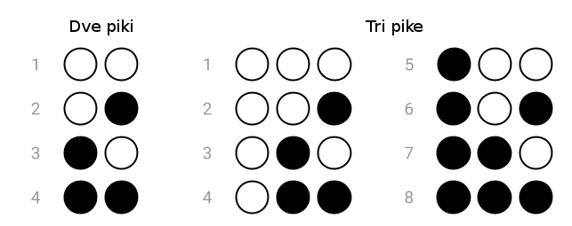

Licenca
To delo je na voljo pod pogoji slovenske licence Creative Commons 2.5:
priznanje avtorstva - nekomercialno - deljenje pod enakimi pogoji.
Celotna licenca je na voljo na spletu na naslovu http://creativecommons.org/licenses/by-nc-sa/2.5/si/. V skladu s to licenco je dovoljeno vsakemu uporabniku delo razmnoževati, distribuirati, javno priobčevati, dajati v najem in tudi predelovati, vendar samo v nekomercialne namene in ob pogoju, da navede avtorja oziroma avtorje in izdajatelja tega dela. Če uporabnik delo predela, kar pomeni, da ga spremeni, preoblikuje, prevede ali uporabi to delo v svojem delu, lahko predelavo dela ponudi na voljo le pod pogoji, ki so enaki pogojem iz te licence oziroma pod enako licenco.

Braillova pisava oziroma brajica
Za začetek si bomo pogledali Braillovo pisavo. Brajica dejansko ni način, na katerega računalniki predstavljajo podatke, predstavlja pa odličen uvod v to temo.
Pred več kot 200 leti je 15-letni francoski fant Louis Braille izumil sistem za predstavitev besedila s kombinacijo ravnih in dvignjenih pik na papirju, tako da jih je mogoče brati z dotikom. Sistem je postal zelo priljubljen pri slepih in slabovidnih ljudeh, saj so lahko sorazmerno hitro in zanesljivo prebrali besedilo, ne da bi ga videli.
Brajica je prvi primer »dvojiške« predstavitve podatkov – samo dva simbola (dvignjena in ravna pika), vendar lahko kombinacije teh dveh simbolov uporabimo za predstavitev knjig in literarnih del. Vsak znak v brajici je predstavljen s celico s 6 pikami. Vsaka pika je lahko dvignjena ali ravna. Različne številke in črke lahko predstavimo z uporabo različnih vzorcev dvignjenih in ne dvignjenih (ravnih) pik.
Koliko različnih kombinacij lahko ustvarimo, če za posamezen brajev znak uporabimo 6 pik. Če bi za vsak znak uporabili le dve piki, bi lahko ustvarimo 4 različne kombinacije (slika levo). S tremi pikami lahko ustvarimo 8 različnih kombinacij (slika desno).

Verjetno si opazil(-a), da lahko s tremi pikami ustvarimo dvakrat več kombinacij, kot z dvema pikama. Izkaže se, da se z vsako novo piko podvoji število možnih kombinacij. Tako lahko s 4 pikami ustvarimo 16 kombinacij, s 5 pikami 32 kombinacij in s 6 pikami 64 kombinacij. Torej lahko s 6 pikami ustvarimo 64 različnih kombinacij, kar je dovolj za predstavitev vseh črk abecede in drugih simbolov, kot so številke in ločila.
Razlog, zaradi katerega se ukvarjamo z brajico, je predstavitev z uporabo bitov. To pomeni, da uporabimo natančno dve različni vrednosti (dvignjena in ravna pika) in različna zaporedja oziroma kombinacije teh dveh vrednosti. Črko m bi lahko na primer zapisali kot 110010, pri čemer "1" pomeni dvignjeno piko, "0" pa ravno piko (pike beremo od leve proti desni na nato navzdol). Točno tako z uporabo ničel in enic tudi računalnik predstavlja podatke.
Brajica nazorno prikazuje priljubljenost dvojiške predstavitve podatkov. Lahko bi imeli na primer tri vrste pik: ravno, na pol dvignjeno in dvignjeno. Izkušen bralec bi lahko razločeval med tremi vrednostmi in za 64 kombinacij bi tako potrebovali le 4 pike. Težava bi bila v tem, da bi potrebovali natančnejše naprave za ustvarjanje pik in ljudje bi morali biti natančnejši pri zaznavanju teh pik. Če bi bila stran zmečkana, ali morda samo zelo rahlo zmečkana, bi to pomenilo neberljivost oziroma nerazpoznavnost informacij.
Digitalne naprave iz podobnih razlogov skoraj vedno uporabljajo samo dve vrednosti: računalniški diski in pomnilniki so lahko cenejši in manjši, če morajo razlikovati le med dvema skrajnma vrednostima (kot sta visoka in nizka napetost), namesto, da bi morale razločevati med večimi zelo majhnimi razlikami v napetostih. Uporaba desetih številk (kot jih vsakodnevno uporabljamo pri desetiškem štetju) bi bila očitno prezahtevna.